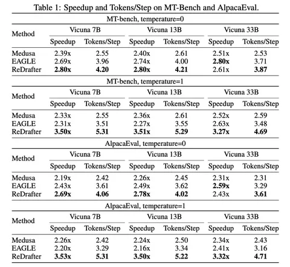

Сегодняшняя статья посвящена Recurrent Drafter (ReDrafter) — новому подходу к спекулятивному декодированию. Авторы заявляют, что он позволяет значительно увеличить скорость моделей.
Само спекулятивное декодирование основано на использовании дополнительной «черновой» модели, которая предлагает варианты продолжения цепочек токенов. Основная модель проверяет эти варианты, выбирая один с помощью специальной процедуры верификации. Качество генераций остаётся таким же, как и без использования спекулятивного декодирования, потому что окончательное решение о принятии тех или иных токенов лежит на основной модели.
В ReDrafter в качестве черновой модели используется RNN. Благодаря рекуррентной структуре, учитывается зависимость между черновыми токенами. Кроме того, RNN, помимо последнего токена, также видит и скрытое состояние из последнего слоя LLM, что даёт ей возможность лучше следовать генерациям основной модели.
С помощью алгоритма динамического древа внимания (dynamic tree attention algorithm), в сгенерированных RNN кандидатах убираются повторяющиеся префиксы. Таким образом, в основную модель попадает меньше вариантов, а значит затраты вычислительных ресурсов становятся меньше. Далее основная модель оценивает предложенные варианты (при этом, сразу несколько), выбирает лучший и процесс повторяется снова.
RNN обучается с помощью дистилляции из основной модели. Это позволяет RNN предсказывать токены с вероятностями, максимально приближенными к ожиданиям LLM. Таким образом, «черновая» модель реже предлагает токены, которые будут отклонены.
Авторы отмечают, что использование дистилляции дает лучшие результаты, чем обучение «черновой» модели на исходном датасете, на котором тренировали LLM. Так, скорость генерации и число принятых токенов за один шаг на Vicuna 7B выросли примерно на 10%.
ReDrafter показал лучшие результаты по сравнению с методами Medusa и EAGLE на бенчмарках MT-Bench и AlpacaEval. При этом, по сравнению с жадной генерацией, генерация семплированием показывает ещё большее ускорение, чего обычно не показывают другие методы спекулятивного декодирования.
Разбор подготовил
Душный NLP
